Практика · журнал «ДентАрт» 2015 №4
Визначення центрального співвідношення
IDENTIFICATION OF CENTRIC JAW RELATION
У цій частині статті мова піде про визначення центрального співвідношення. Важливо пам'ятати про умови визначення цього положення нижньої щелепи: розслаблена мускулатура, суглобові головки нижньої щелепи — по центру диска, і комплекс головка — диск займає передньо-верхнє положення у суглобовій ямці — як у правому, так і в лівому скроневонижньощелеповому суглобі. Розглянемо найбільш поширені методики визначення центрального співвідношення: визначення за допомогою фронтального депрограматора, на підставі записів рухів за допомогою функціографа і мануальної методики маніпулювання нижньою щелепою. Фронтальний депрограматор і функціограф дають можливість домогтися самопозиціонування суглобових елементів. Маніпулювання дозволяє спрямувати рухи щелепи і об'єктивізувати можливі порушення.

Для того, щоб зрозуміти, як зафіксувати центральне співвідношення, слід розібратися в тому, як працює жувальний апарат. Чи цікавилися ви, навіщо або чому дитина все тягне в рот? Проведіть експеримент: візьміть предмет зі складною поверхнею і прикладіть його до спини. Що ви про нього скажете? Тільки те, що він є! Тепер досліджуємо той самий предмет кінчиками пальців. Цей метод більш інформативний. Але якщо досліджувати його передніми зубами, кількість інформації буде на порядок вищою. Діти досліджують світ зубами! Наші передні зуби — це передусім орган відчуттів і в жувальній системі виконують саме таку функцію!
З'ясуємо: навіщо зуби верхньої щелепи перекривають нижні? Коли харчова грудка міститься між бічними зубами, активуються м'язи, що піднімають нижню щелепу, і розвивається значне зусилля. Зверніть увагу: доки не відбулося змикання бокових зубів, передні зуби перебувають у дезоклюзії.
Чи потрібно зберігати зусилля при подальшому протрузійному або латеротрузійному русі? Звичайно, ні! Інакше зуби зітруть один одного. Що ж служить своєрідним «вимикачем»? Це передні зуби — наш орган чуттів, «менеджери» жувального циклу. За правилом важеля, навантаження в зоні передніх зубів значно нижче, а контроль кращий. Навантаження на передні зуби рефлекторно вимикає м'язи, що піднімають нижню щелепу, і включає м'язи, що опускають її. Жувальний цикл відбувається петлеподібною траєкторією, і піднебінні поверхні верхніх різців та ікол визначають їх вестибулярний аспект.
Тут ми описали найпростішу оклюзійну схему і важливий принцип функціонування жувального апарату.
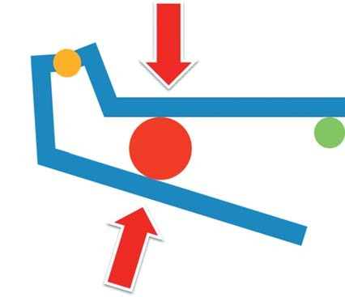
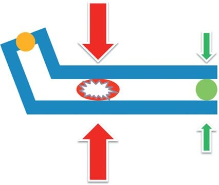
Фронтальний депрограматор
Домагаючись контакту лише фронтальної групи зубів, на 10-15 хвилин ми отримуємо, крім рефлекторного розслаблення, ще й депрограмування м'язів — вони «забувають», в яке становище необхідно привести нижню щелепу. Важливо, щоб пристосування розташовувалося по центру зубних рядів і мало рівномірний контакт як з опорними зубами, так і з зубами-антагоністами — для усунення підвищеної активності м'язів одного з боків, що призведе до зміщення щелепи.
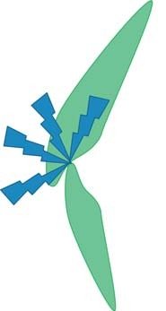
Слайдинг
Найпопулярнішим депрограматором на нашому ринку є слайдинг компанії Аман Гірбах/Amann Girbach. Це три вигнутих клини різної товщини і конусності. Він дозволяє добитися мінімального роз'єднання або задати необхідну вертикалізацію оклюзії.
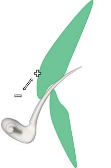
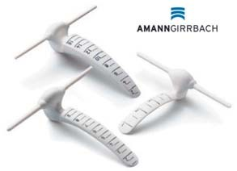
Листковий калібратор
Менш відома у нас продукція американської компанії Грейт Лейкс/Great Lakes, на яку часто посилаються у презентаціях і статтях зарубіжні колеги: листковий калібратор, «блокнот» з тонких пластикових пластин, що дозволяє дуже точно дозувати роз'єднання і виявляти суперконтакти.
Основний недолік цих пристроїв — формування похилої площини, здатної призвести до дистального зсуву нижньої щелепи. З цієї причини їх неможливо застосовувати у пацієнтів з класом 2 підкласом 2 по Енглю. Також слід відмовитися від цих пристроїв у випадку найменшого дискомфорту в ділянці скроневонижньощелепового суглоба або при болях у м'язах, про що слід проінструктувати пацієнта.
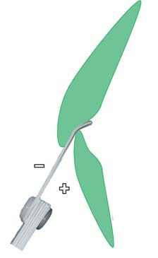
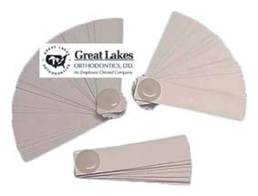
Лючія Джиг
Позбавлені цього недоліку пристрої типу Люсія Джиг/Lucia Gig або ЕнТіАй/NTI шини. Їх площина позиціонується паралельно жувальній, що сприяє невимушеному положенню нижньої щелепи завдяки збалансованому тонусу мускулатури.
Дизайн підбирається залежно від класу оклюзії. Класичне положення джига — це різці верхньої щелепи. ЕнТіАй/NTI-подібні пристосування розташовуються на різцях як верхньої, так і нижньої щелепи, в залежності від перекриття і взаєморозміщення передніх зубів.
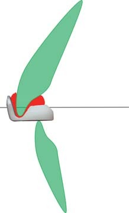
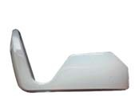
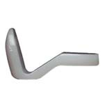
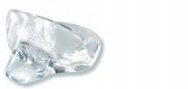
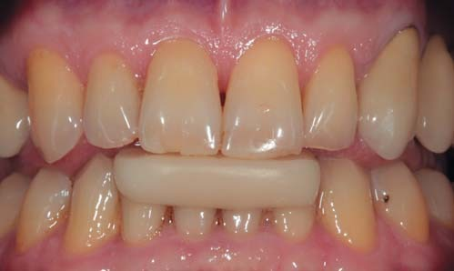
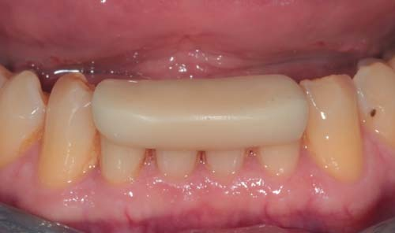
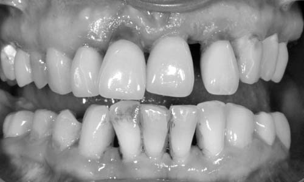
Позиціонування пристосування проводять самотвердіючою пластмасою.
Застосовуючи ці пристосування, ми стикаємося з іншою проблемою — надмірне роз'єднання і відсутність можливості його контролювати. З іншого боку, ніщо не заважає самостійно виготовити подібне пристосування із самотвердіючих матеріалів — з тим дизайном та розташуванням, які будуть найбільш адекватні клінічній ситуації.
Фронтальний депрограматор неможливо застосовувати при пародонтиті (спотворення або відсутність рецепторної функції), різко асиметричному положенні зубів та адентії фронтальної ділянки.
Протрузійний і латеротрузійні рухи стартують з положення максимальної інтеркуспідації. Записати рух допоможе пристосування, що складається з пластинки, яка монтується паралельно оклюзійній площині, і гвинта, зафіксованого у втулці, що дає можливість контролювати висоту роз'єднання. Конструкція пристосувань різних виробників відрізняється лише варіабельністю дизайну.
Запис готичного кута
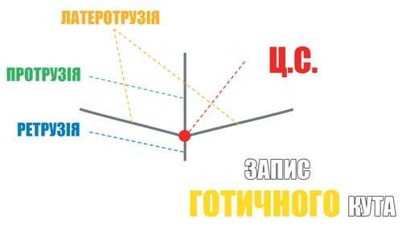
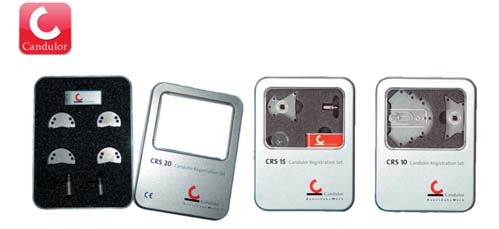
Після накладання пігменту на пластину і установки пристосування в ротовій порожнині фіксується необхідна міжальвеолярна відстань і пацієнт проводить кілька рухів вперед — назад і праворуч — ліворуч. Запис бажано провести кілька разів, щоб усунути можливість помилки.
Точка перетину фіксується позиціонером, і виконується фіксація співвідношення жорстким матеріалом. Такий підхід дозволяє провести аксіографію, усунувши оклюзійний компонент рухів нижньої щелепи.
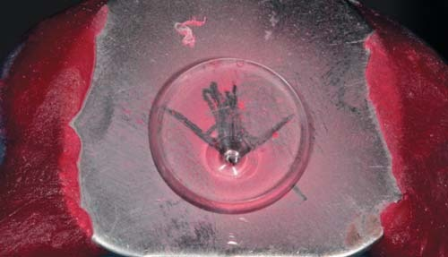
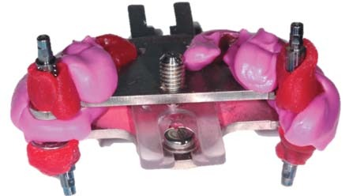
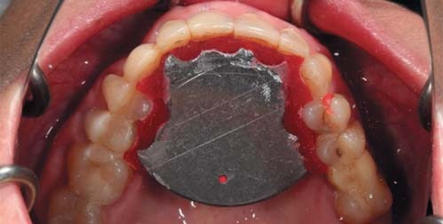
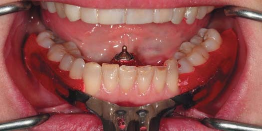
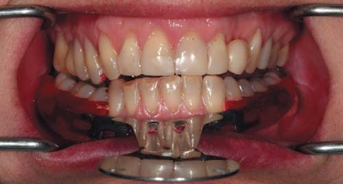
Маніпулювання
Кардинально інший підхід — маніпулювання. Освоєння цієї методики передбачає період навчання і критичний, обережний підхід до її застосування, однак дозволяє об'єктивізувати отриманий результат. Широко використовуються дві методики: маніпулювання за Славічеком та маніпулювання за Доусоном.
Перша передбачає віднайдення позиції переходу трансляції в ротацію за ненавантаженого супроводу нижньої щелепи при закриванні. Положення пацієнта — сидячи в невимушеній позі. Вказівний і середній пальці оператора розташовуються під нижньою щелепою, праворуч і ліворуч, великий палець — на підборідді. Проведення реєстрації без попередньої міорелаксації (сплінт-терапії) викликає труднощі.
Друга методика ґрунтується на відтворенні роботи м'язів у нормі та позиціонуванні структури скроневонижньощелепового суглоба під навантаженням.
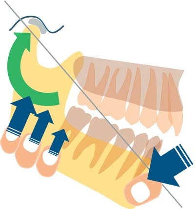
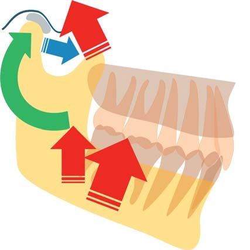
Маніпулювання за методикою Пітера Доусона передбачає контроль стану структур скроневонижньощелепового суглоба шляхом дозованого навантаження на них (навантажувальна проба). Слід усунути вплив м'язів на позицію, що фіксується, — шляхом контролю за тонусом при іррегулярних, невеликих за амплітудою похитувальних (відкрити — закрити) рухах. Для цього розташовують пацієнта в лежачому положенні і просять зайняти симетричну розслаблену позу (руки вздовж тіла, ноги прямо). Оператор перебуває в позиції на 12:00, даючи упор для голови пацієнта своїм тілом. Пальці розміщуються на щелепі, у найближчому до кута положенні або охоплюючи кут безіменним і/або мізинцем (вертикальний компонент), а великі пальці розташовуються на підборідді (ротаційно-протрузійний компонент); можна відтворити вплив на суглоб м'язового зусилля в нормі і контролювати положення компонентів.
На практиці можна комбінувати різні прийоми і техніки в залежності від клінічної ситуації і визначеної мети. У форматі статті розповісти про всі методики і техніки визначення центрального співвідношення, на жаль, неможливо, але ми намагалися висвітлити основні принципи і методики.
Література
- Cuman G., Masnata R., Nannini C., Baldin M. Изготовление полносъемных протезов по методу Славичека. М.: ООО «Медицинская пресса», 2009. — 138 с.
- Дапприх Ю., Ойдтманн Э. М. Протезирование при полной адентии. М.: Азбука, 2007. — 175 с.
- Славичек Р. Жевательный орган. Функции и дисфункции. М.: Азбука, 2008. — 543 с.
- Клинеберг И., Джагер Р. Окклюзия и клиническая практика. М.: Медпресс-информ, 2006. — 200 с.
- Манфредини Д. Височно-нижнечелюстные расстройства. М., С-Пб., К.: Азбука, 2008.
- Зойберт Гюнтер. Азбука зуботехнического мастерства. Принципы анатомического воскового моделирования по Шульцу. М.: Азбука, 2007. — 141 с.
- Ховат А.П., Капп Н.Д., Барретт Н.В.Д. Окклюзия и патология окклюзии. Цветной атлас. М.: Азбука, 2005. — 233 с.
- Хайман Смуклер. Нормализация окклюзии при наличии интактных и восстановленных зубов. М.: Азбука, 2006. — 136 с.
- Майкл Уайз. Ошибки протезирования. Лечение пациентов с несостоятельностью зубного ряда. М.: Азбука, 2005. — 408 с.